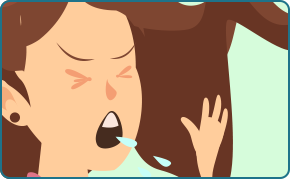

TRANSMISSÃO

Espirro
Tosse

Catarro
SINTOMAS
Sinais e sintomas clínicos são
principalmente respiratórios, semelhantes aos de um resfriado comum

Gotículas de Saliva
Contato Pŕoximo
Contato com objeto ou superfícies
contaminadas